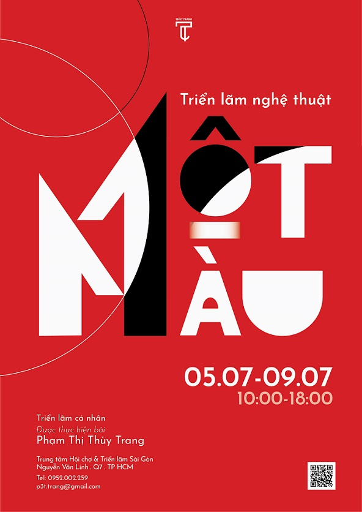
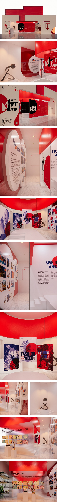
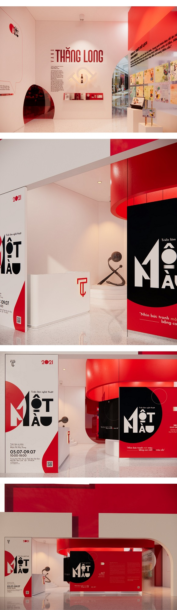

MotMau
"One color" is not just a phrase, it is also an adjective - a comment. I took 03 years of college, went through all emotional frames, overcame many challenges to get here, in the 4th year. I am not subdivicted by each school year, because for me, all are special, though not outstanding, but each frame gives me a new feeling.



MotMau
Showroom
I felt that I was not too progressive or outstanding through each year, so it was called a color. In the course of study, there were many times when I wanted to give up, or intend to give up, because I did not see the change in myself, I found myself inferior, could not stand on par with my friends. I have witnessed me in the past, a person who is too focused on the score, every time I have a poor point, the notion of "I am not suitable for graphic design" becomes more overwhelming and strong. Fortunately, I haven't left any projects, I still do, continue to do, with an indifferent to the cold. Then, when it was something that made me feel interesting about a project, my eyes suddenly glowed for a moment. I think a lot and is somewhat complicated, not in particular about the project, I tell myself. But I didn't force myself to think less, no one could do it. What I can do is to let my thoughts go smoothly, until tired, he knows how to stop. If you try to understand it, you're just looking for your maze. That is also the reason I choose the T letter for my exhibition, a T Font Bold. First of all it was the first letter in my name, the first reason it kept hanging around in my head forever. The exterior T is quite simple, but for me that is 02 perfect features, choosing bold font has a strongware, quite conflicting with me. It also carries the shape of the key. I want to assign myself, I want the letter in my name to be the lock that opened the door to escape from that maze. Besides the projects that gave me a sense of sadness and depression, I also had a happy time and did my best with my heart. The topics I like or even energy come from the instructors. There are lecturers who teach me new things, making me feel interesting and swept into my project, but there are also lecturers who go through and I don't get anything back, maybe it's time for us to know by ourselves. What should I do? I was surprised by what everyone, rather my friend, acknowledged me. When I listened, I realized that, "Oh, people see me like that." A aspect that I never thought, I never thought I had a good point in studying. My friend said that as long as I liked something, I would do my best with the burning enthusiasm until the end, my eyes were bright, just thinking about it forever. That is what I want to convey to the audience when watching my exhibition. I look forward to being seen from your lens, a colorful and exciting head look. My eyes only see one color, will you show me other colors?
What I did
- Logo
- Showroom exhibition space

" I'm a brand designer based in Hanoi and I'm also falling in love with typography. I like working with individuals, small and big businesses in various areas like the food, lifestyle, fashion, beauty and culture industries. I'm also open to working with agencies to assist on projects and to continue learning."
— Trang Pham